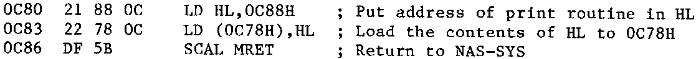

INMC 80 News |
February–April 1981 · Issue 3 |
| Page 41 of 55 |
|---|
can understand it. When I finally realised PORT 4 was synonymous with PORT A and that PORT 5 was PORT B, I was able to deduce that only pins 1 to 16 were required to drive the printer. Nascom had provided the 16 way cable for the serial I/O which I had no use for, so I used that.
I connected everything up switched everything on and tried it. Nothing. My disappointment when the printer didn’t leap into life when I typed on the keyboard was great. So I re-read the listing, and then again. I re-read everything I had. I even started to read the machine code part of the Nascom manual. I experienced the usual feeling of total blankness that occurs every time I open the manual at those pages. I phoned Nascom. I went to Henry’s, but found them to busy to be of help, they tested the PIO though, it was ok. I phoned Aculab. Finally I wrote a long letter to Nascom explaining exactly what I had done, and after he came back from his holiday, I was able to speak to an excellent chap called Dave Lewis, who set my mind on the right track.
It seemed that Henry’s listing converted all ‘carriage returns’ to ‘line feeds, whilst the Aculab interface would only respond to ‘carriage returns’. He also explained that I would have to initialize the UOUT reflection (what ever that was). What this meant was that I had to insert the address of my printer routine into a location in the NAS-SYS workspace to direct the character to be printed to the printer routine. A little program was added to the front of the print routine to redirect UOUT automatically.
I typed this in using the ‘M’ command at 0C80H, followed by the printer routine at 0C88H. What I didn’t realise is that you have to run the program at 0C80H to tell the computer to redirect UOUT. I now have this down to a fine art. where the program (and the printer routine) is loaded from tape and then executes itself (see the ‘G’ command in the manual). Next I type EB800 to execute NASPEN. Unfortunately, NASPEN assumes that a serial printer is in use at this stage, and it is necessary to change the NASPEN print reflection. I don’t know what this means, but I do know that after executing NASPEN, I use its ‘N’ command to return to monitor and alter the memory at location 101DH. My version of NASPEN has the following:
101D DF
101E 6E (this must be changed to 75)
101F C9
There is a snag in this, in having returned to WNAS-SYS, the UOUT reflection gets changed, so before returning to NASPEN, 0C80 has to executed again. So you have to type in E0C80 followed by EB806 (N.B. B806, NASPEN warm start). If you typed EB800, NASPEN would change the byte at 101E back to 6E, and the whole process would have to be repeated.
So I wrote a small piece of text using NASPEN and used the ‘P’ command to print it. The printer burst into life EUREKA!!!!! – ??? Well, it worked, but I wished I had a gothic golf ball, as the printer cleverly converted my piece of text into Chaucerian English with lots of repeated letters and lots of letters left out. Aculab provided the cures for this. The missed out letters only occured after spaces. This was because the device inside the printer which makes spaces was worn, and instead of turning once for each space, turned twice instead. This didn’t print two spaces but it did send two pulses to the interface, and thence to the Nascom, telling the Nascom that it had already printed the next letter. Aculab told me how to adjust the pawl and ratchet under the printer mechanism which controlled the space bar clutch. A little bending soon put that right. The repeated letters came from noise on the data strobe, and Aculab suggested a capacitor of about 500pF between the strobe and ground. I found that 1000pF was satisfactory.
So after considerable effort, (mainly on the part of the suppliers) my printer worked, worked far too well, because I now have a sort of keyboard mania and can’t stop typing. I hope this information will be helpful to someone.
| Page 41 of 55 |
|---|